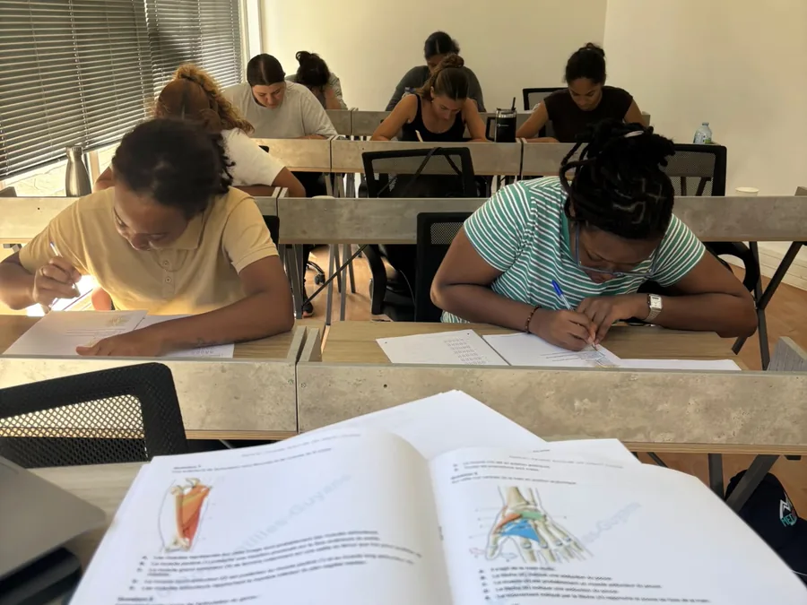

La première promotion de la licence portail santé
Les bacheliers de juin 2027 inaugureront la nouvelle voie d'accès aux études de santé. Nous ouvrons les inscriptions dès maintenant, pour les familles qui veulent s'organiser tôt et réserver une place dans une promotion qui sera limitée.
Places limitées par territoire et par filière
Pourquoi s'y prendre maintenant
Parce que tout change en même temps. Le PASS et la LAS disparaissent, la sélection se fera sur le contrôle continu, et le choix de la discipline associée se jouera dès Parcoursup, en janvier 2027. Les familles qui s'organisent tôt abordent cette année avec une méthode de travail déjà en place, pendant que les autres la découvrent en novembre.
S'inscrire maintenant n'engage pas de versement : cela réserve une place et vous donne accès à nos informations en priorité, à mesure que les textes paraissent.
La grille 2027-2028 sera publiée ici
Nous ne la publions pas encore, et nous préférons vous dire pourquoi plutôt que d'annoncer un prix que nous devrions corriger.
La réforme n'est pas publiée
Ni le décret ni l'arrêté ne sont parus. Tant que le volume des enseignements et les modalités d'évaluation ne sont pas connus, personne ne peut chiffrer honnêtement l'accompagnement nécessaire.
Le besoin ne sera pas le même partout
Le contrôle continu réclame un suivi plus régulier qu'un concours terminal. Et selon que la Faculté organise des oraux ou non, l'accompagnement à prévoir change du tout au tout.
Un tarif par territoire
Le présentiel et le distanciel n'ont ni les mêmes coûts ni les mêmes contraintes, et l'organisation ne sera pas identique d'un territoire à l'autre. Chaque territoire aura donc sa propre grille.
Les maquettes des universités sont attendues en novembre 2026, et les formations doivent figurer dans Parcoursup au plus tard le 10 décembre 2026. Nous publierons notre grille dès que ces éléments seront connus, et les familles déjà inscrites en seront informées les premières.
Le socle de la prépa
Quelle que soit la forme finale de la réforme, ce qui fait notre travail reste le même.
- Des cours rédigés par notre équipe, avec la même rigueur qui a fait le succès de nos cours les années précédentes
- La plus grande base de QCM des Antilles-Guyane, écrite par nos tuteurs
- Des examens blancs réguliers, dans les conditions réelles
- Des tuteurs disponibles tous les jours, qui ont passé le concours ici
- En présentiel et en distanciel optimisé, selon les territoires et les souhaits de chacun

Prendre de l'avance avant même la rentrée
Notre parcours Terminale Santé travaille le socle scientifique que la réforme ne change pas : chimie, physique, biochimie, anatomie, physiologie, embryologie et biostatistiques. Un mercredi par semaine, d'octobre à avril.
Ce que les familles nous demandent
S'inscrire maintenant, est-ce que ça m'engage ?
Pourquoi ne pas annoncer vos tarifs dès maintenant ?
Le tarif sera-t-il le même dans les trois territoires ?
Et si la réforme est reportée à 2028 ?
Mon enfant est en première, puis-je déjà réserver ?
S'inscrire pour 2027-2028
Sans versement et sans engagement, pour réserver une place dans la première promotion.